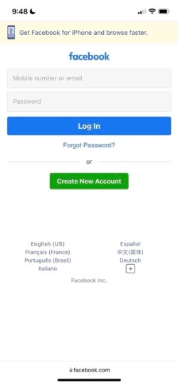

Principle 1: Proximity
- Facebook
- Facebook Login Page
- 
- The facebook login page is a great example of proximity.
We can see on the page that the username and password text-fields are very close together.
They are separated from the create new Account button with a dividing line and some extra space.
Towards the bottom of the page they have language options.
They are separated from the login area with whitespace to show that they dont need to be messed with to login.
Principle 2: Alignment
- Church of Jesus Christ of Latter-day Saints
- Church Home page

- The Church website is a good example of alignment.
The name of the church is at the top center of the page. Below that are a series of cards about church
related topics centered on Christ. They are all evenly spaced and the same size as you scroll through
them.
Principle 3: Whitespace
- Apple
- Apple Home Page
- The Apple website home-page is a fantastic exmaple of a good use of whitespace.
The focus of the home-page right now is the new iPhone 13 Pro front and center of the page;
around the image is completely baren with just the white background. In addition to that, the menu bar at the top has only 3 elements:
a menu drop down, the Apple logo to help oyu navigate home, and your bag or cart.
All spaces between are void of any filler words or images.